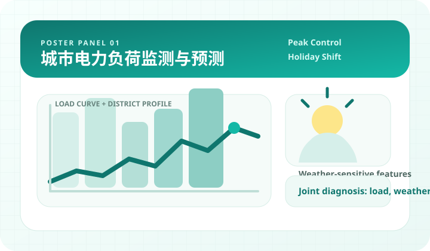

场景理解
将调度、运维和容量规划目标转成预测窗口、时间粒度、评价指标与业务约束。
中国科学技术大学 · 认知智能全国重点实验室 AGI 研究组
面向城市电力负荷、新能源发电、云服务流量等真实预测场景，持续推进时间序列预测的应用研究与系统建设
应用研究不止比较模型指标，而是把问题定义、数据质量、建模策略和系统沉淀放进同一个迭代闭环。
将调度、运维和容量规划目标转成预测窗口、时间粒度、评价指标与业务约束。
检查缺失、漂移、周期、异常和外部变量可用性，先判断数据是否支撑任务目标。
组合历史序列、气象日历、业务事件和多模型基线，形成可解释的预测实验方案。
通过 Planner、Forecaster、Critic 编排实验、解释误差，并在关键节点引入人工确认。
把有效模板、特征处理、模型组合和复盘结论沉淀为后续场景可复用的研究资产。
应用研究的目标不是把公开数据集上的模型指标直接搬到真实场景，而是把业务机制、外部变量、工程约束和模型能力放在同一个研发闭环中评估。 因此，页面按“场景问题、方法路径、系统支撑”组织，展示课题组如何将时间序列预测方法落到可复用的应用研究流程中。
面对周期变化、突发波动、外生因素和容量约束，先明确预测任务服务的调度、规划或运维目标。
围绕数据诊断、多源变量接入、模型组合和误差分析，形成可以随场景调整的研究流程。
用智能体框架承载实验编排、工具调用、预测复盘和经验沉淀，让一次性实验逐步变成可复用能力。

聚焦负荷曲线中的强周期性、节假日扰动、天气影响与突发变化， 支撑调度规划、峰谷平衡与需求侧响应等关键任务。

针对新能源出力的间歇性、爬坡事件与气象耦合问题， 关注多源观测融合、短临波动刻画与不确定性建模。

围绕流量突发、业务周期变化与资源成本约束， 探索支持弹性伸缩、容量预算和服务稳定性的预测策略。
真正面向应用的预测系统，不是只输出一个看似确定的数字，而是呈现未来的多种可能， 再把这些可能转化为可比较、可执行的决策依据。
未来并非可被唯一数值准确描述的确定状态。噪声、分布漂移与突发事件使确定的点预测很难可靠成立； 因此，模型需要进行不确定性预测，同时回答“最可能发生什么”和“偏离这一结果的风险有多大”。
在实际应用中，预测的价值不止是降低误差，而是帮助业务选择行动。 将预测结果与风险偏好、成本函数、资源限制和任务目标结合，才能形成可执行的调度、预警、配置或干预方案。
应用研究不是一次性建模，而是由问题理解、多源建模、关键判断与经验沉淀共同驱动的连续闭环。
围绕数据粒度、周期结构、外生变量和业务约束，先做任务诊断，再决定建模路线。
结合数值序列、气象信息、业务上下文和场景先验，提高模型对真实环境的感知能力。
在模型选择、实验切换和结果审阅等关键环节引入研究者判断，避免盲目自动化。
把场景经验、策略模板和执行流程固化为长期资产，支持后续任务快速迁移与扩展。